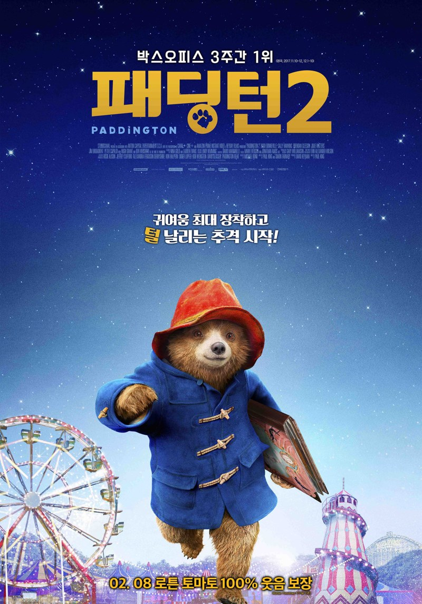
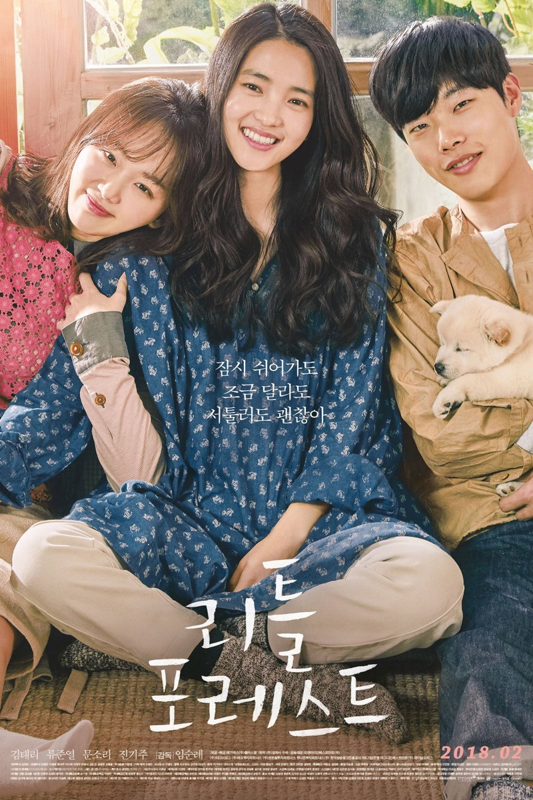
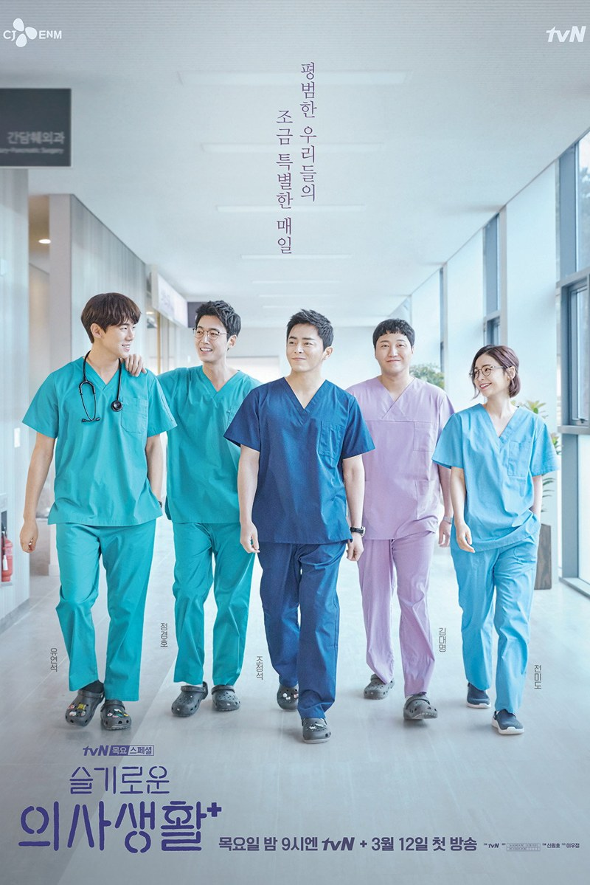
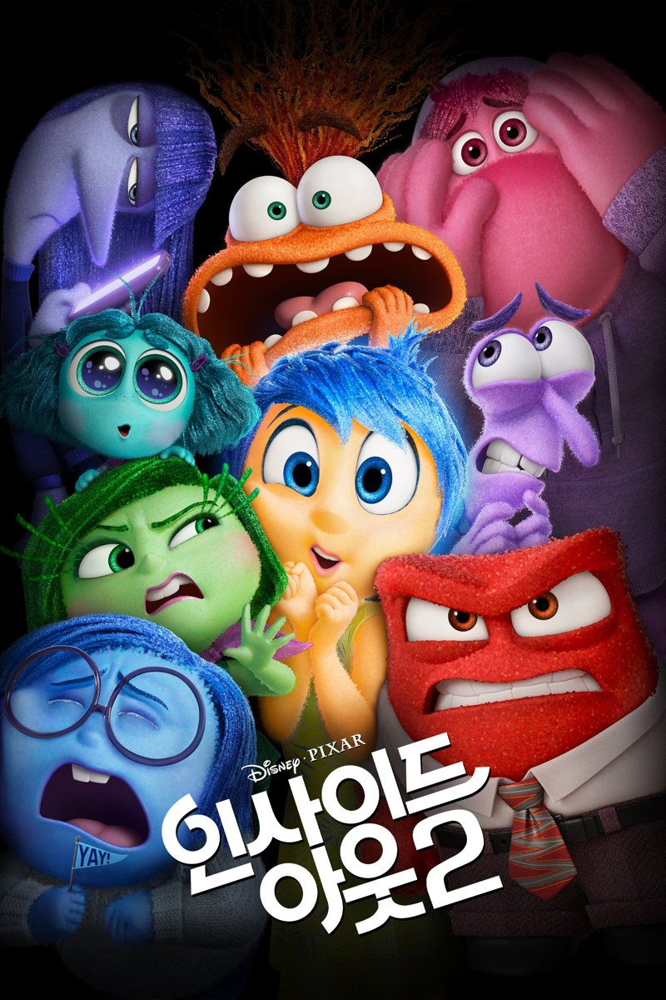
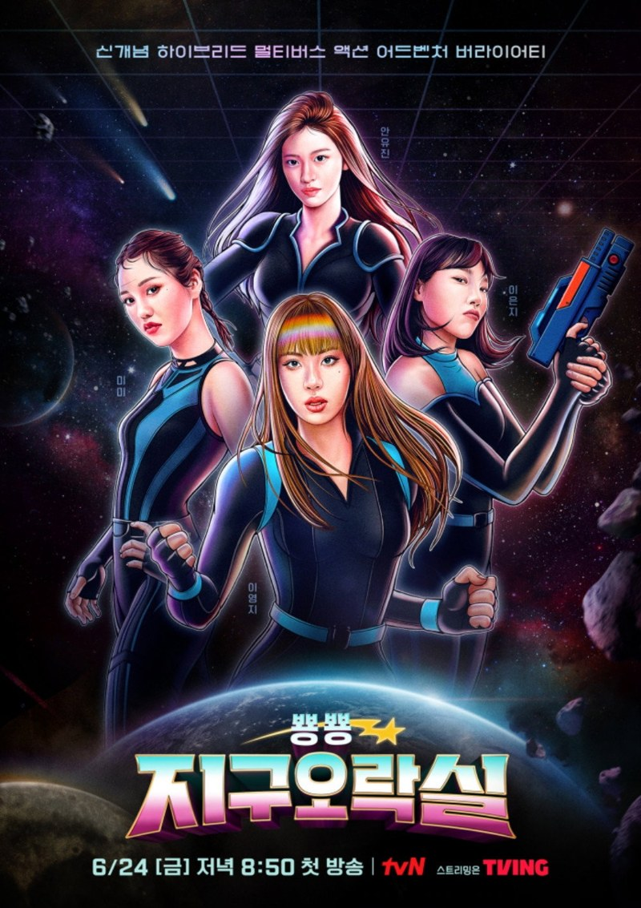
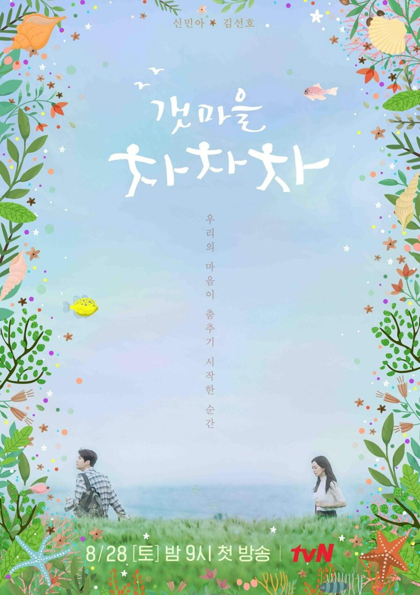
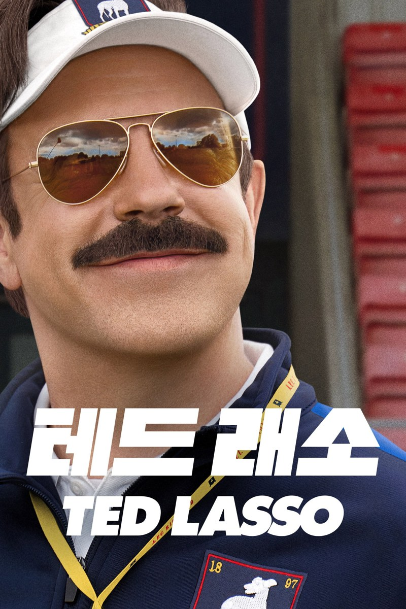

일곱 개 골라봤어요




오늘은 어떤 날이에요?
그냥 아무 생각 없이 웃고 싶다 → 지구오락실
세상이 좀 삭막하다 → 패딩턴 2
사람한테 지쳤는데 사람이 그립다 → 슬의생
다 내려놓고 바다 가고 싶다 → 갯마을 차차차
밥 챙겨 먹기도 귀찮다 → 리틀 포레스트
불안이 자꾸 앞서간다 → 인사이드 아웃 2
누가 괜찮다고 해줬으면 → 테드 래소

머리 비우고
그냥 웃고
싶을 때
뿅뿅 지구오락실
게임 하나에 목숨 거는 네 사람을 보다 보면 어느새 같이 소리 지르고 있어요. 줄거리를 몰라도 되고, 아무 회차나 틀어도 됩니다.
세상이 좀
삭막하게
느껴질 때
패딩턴 2
누명을 쓰고 감옥에 간 곰이 결국 죄수들과 마멀레이드를 만들어요. 빨간 양말 하나 때문에 죄수복이 전부 분홍색이 되는 장면은 몇 번을 봐도 웃깁니다.
사람한테
지쳤는데
사람이
그리울 때
슬기로운 의사생활
20년 지기 의사 다섯 명이 일하고, 같이 밥 먹고, 틈틈이 밴드 합주를 해요. 큰 사건이 없어도 '저런 친구 하나 있으면 좋겠다' 싶어지는 드라마예요.

다 내려놓고
바다 보러
가고 싶을 때
갯마을 차차차
서울 치과의사 혜진이 바닷마을 공진에 병원을 차리면서, 동네 일이라면 뭐든 하는 홍반장과 엮여요. 주인공보다 동네 사람들 이야기가 더 오래 남습니다.
밥 챙겨 먹는
것도 귀찮은 날
리틀 포레스트
서울살이에 지친 혜원이 시골집에 내려와 언 땅에서 배추를 꺼내 배춧국부터 끓여요. 별일 없는 영화인데, 보고 나면 밥 한 끼는 제대로 차려 먹고 싶어집니다.
불안한 마음이
자꾸 앞서갈 때
인사이드 아웃 2
열세 살 라일리 머릿속에 '불안'이 들어오면서 벌어지는 소동이에요. 불안이도 사실은 라일리를 지키려던 거였다는 걸 알게 되는 순간, 남 얘기 같지가 않아요.

누가 '괜찮아'
한마디만
해줬으면 할 때
테드 래소
축구를 하나도 모르는 미국 코치가 영국 축구팀 감독이 돼요. 매일 아침 구단주에게 직접 구운 비스킷을 가져다주는 사람이고요. 라커룸에 붙은 'BELIEVE' 종이 한 장이 이상하게 오래 남습니다.
오늘 하루도
고생 많았어요.
힘든 날 꺼내 보는 작품이 있다면 댓글로 알려주세요.
다음 리스트에 넣어 볼게요.
마음이 오래 무겁다면 혼자 버티지 말고
가까운 사람이나 전문가에게 꼭 이야기해 보세요.